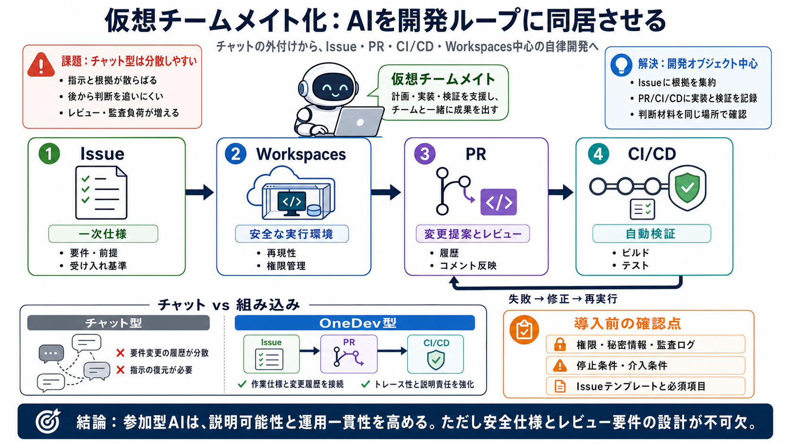

theonedev/onedev: Git Server with CI/CD, Kanban ...
AI users work autonomously in your issue and pull request flow: implement assigned issues, review and improve pull reque…

AIをチャットの外付けではなく、Issue・PR・CI/CD・Workspacesに同居させる「自律開発プラットフォーム」の考え方。
チャット型は指示と根拠が散らばり、後から「なぜそうなったか」を追えない。結果としてレビューと監査の負荷が上がる。
AIを単発の回答者から、Issue状態に応じて作業を進める“仮想チームメイト”へ置き換える。失敗したら再試行し、レビューとビルド結果に反応するループを回す。
AIはIssueを一次仕様として読み、実装はPRで提案し、CI/CDで自動検証してから次の修正へ進む。
隔離されたWorkspaces上で実行することで、セットアップ指示を逐一人間が説明する必要を減らす。環境差分を失敗要因にしにくくし、再現性を上げる。
PRがエンジニアリングの反復ループになり、ビルド結果やレビューコメントを踏まえて修正コミットを重ねる。チェックを通るまで同じ流れで進める。
AIが作った変更もPRに載るため、レビューアは別ウィンドウの「指示の復元」を減らせる。IssueとリンクされたPRを見れば判断材料が揃う。
チャット型は指示と結果が分散しやすいのに対し、OneDevは開発オブジェクト（Issue/PR/CI/CD）に沿って一貫させる。
OneDevの主張は、耐久性のある仕様・安全な実行・通常ループ・ガバナンス・品質・運用の改善に集約される。
記事本文だけでは、停止条件や詳細な権限モデル、秘密情報の扱いなどが不十分である可能性がある。追加情報でガードレールを確認する必要がある。
IssueがAIの一次仕様（source of truth）になるため、受け入れ基準や期待が薄いと実装精度や通過率が落ちるはず。テンプレート化や必須項目でガバナンスが必要になる。
AIを開発ループ（Issue/PR/CI/CD）に内包する設計は、説明可能性と運用一貫性を高める方向。実現には、Workspacesの安全仕様と停止・レビュー要件の設計が不可欠。
AI users work autonomously in your issue and pull request flow: implement assigned issues, review and improve pull reque…
# AI Teammates in Issues, Pull Requests and CI. OneDev puts AI users inside the same development system your team alread…
OneDev 15.1 enhances and better integrates existing AI capabilities, enabling a more streamlined development workflow.
Self host OneDev - All-In-One DevOps Platform. With Git Management, Issue Tracking, and CI/CD. Simple yet Powerful.
## Git server with CI/CD, kanban, and packages. It allows my team and me to easily keep track of tasks and code, create …